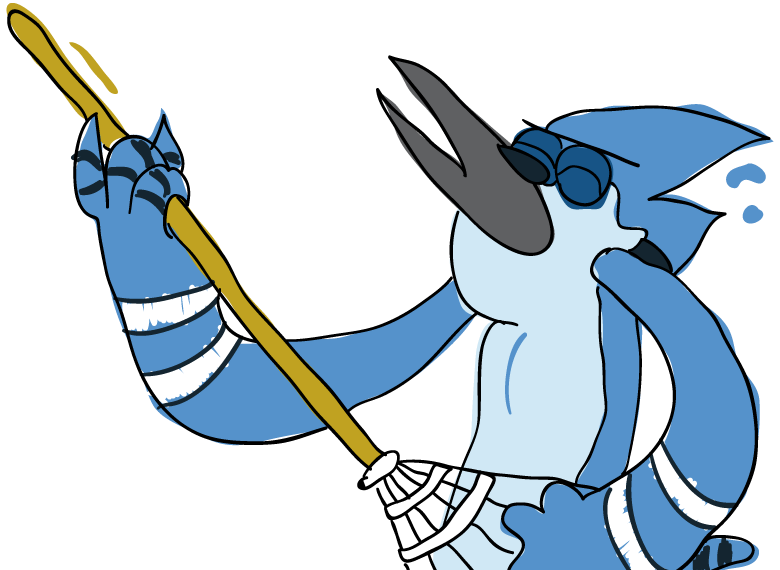

¿Como he desperdiciado mi tiempo?
Mi video de música favorito es
Supersoaker de
los Kings of Leon.
La última película que me gustó mucho y considero que ahora la puedo nombrar en la categoria de películas favoritas es
X-Men Apocalipsis
Edsger Dijkstra, es una de las personas a las que admiro por todas las contribuciones que tuvo en las áreas de las ciencias en computación.
